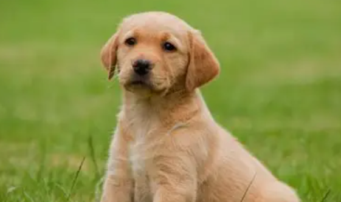
Perro
El perro es un mamífero domesticado que desciende del lobo. Convive con las personas desde hace miles de años. Su olfato y oído están muy desarrollados, y existen perros de tamaños y aspectos muy distintos.
Conoce cinco grupos del reino animal a través de sus características y hábitats.
Los mamíferos son vertebrados que, por lo general, tienen pelo y alimentan a sus crías con leche.

El perro es un mamífero domesticado que desciende del lobo. Convive con las personas desde hace miles de años. Su olfato y oído están muy desarrollados, y existen perros de tamaños y aspectos muy distintos.
El gato doméstico es un mamífero ágil, con garras retráctiles y una excelente visión en condiciones de poca luz. Se comunica mediante sonidos, posturas y movimientos de la cola, y también utiliza bigotes para orientarse.
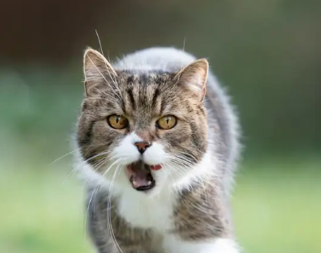
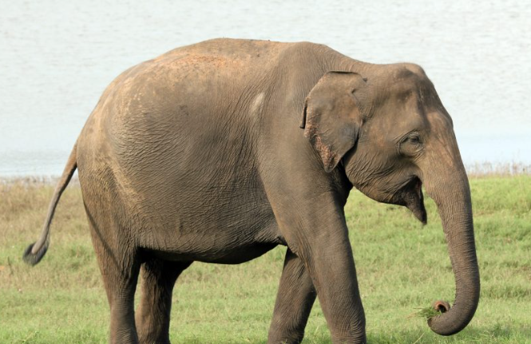
El elefante es un mamífero herbívoro conocido por su gran tamaño, sus colmillos y su larga trompa. Vive en grupos sociales y usa la trompa para respirar, recoger alimento, beber agua y comunicarse.
Las aves son vertebrados con plumas. La mayoría tiene alas y pone huevos.
El águila es un ave rapaz que suele construir su nido en lugares altos, como acantilados o árboles. Sus garras fuertes y su pico curvado le ayudan a capturar y alimentarse de sus presas.
La paloma es un ave que se ha adaptado a vivir tanto en el campo como en pueblos y ciudades. Se orienta muy bien durante sus desplazamientos y suele alimentarse de semillas y pequeños frutos.
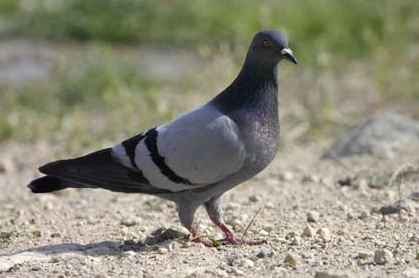
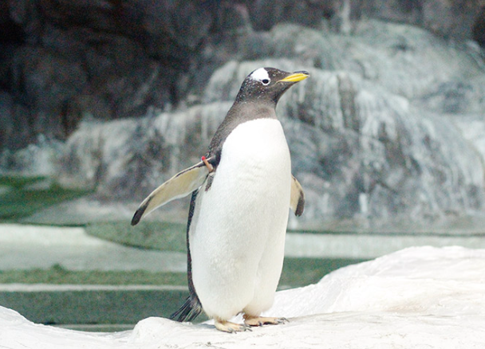
El pingüino es un ave marina que no puede volar y pasa gran parte de su vida en el agua. Sus alas funcionan como aletas para impulsarse al nadar, y sus plumas densas lo protegen del frío.
Los peces viven en el agua, respiran principalmente mediante branquias y se desplazan con sus aletas.
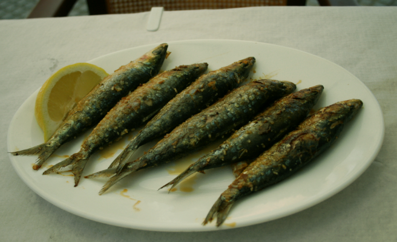
La sardina es un pez pequeño de cuerpo plateado que habita en aguas marinas. Forma bancos numerosos que se mueven juntos, lo que puede ayudarle a protegerse de los depredadores.
El tiburón es un pez cartilaginoso que vive en mares de todo el mundo. Hay especies de tamaños muy variados. Respira gracias a sus branquias y cuenta con sentidos que le ayudan a detectar alimento en el agua.
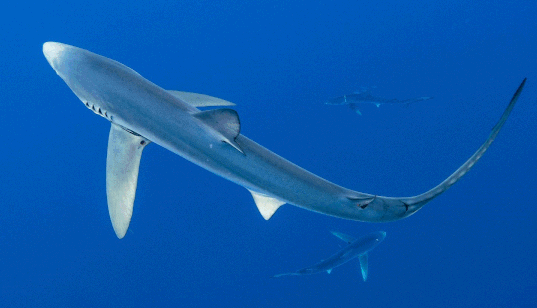
El pez payaso es un pez marino de vivos colores, reconocible por sus franjas blancas y anaranjadas. Vive entre los tentáculos de ciertas anémonas, donde encuentra refugio frente a muchos depredadores.
Muchos anfibios comienzan su vida en el agua y, al crecer, también pueden vivir en tierra.
La rana es un anfibio de piel húmeda y patas traseras largas, adaptadas para saltar y nadar. Su ciclo de vida suele empezar en el agua, donde nacen los renacuajos, que cambian al convertirse en adultos.
El sapo es un anfibio de cuerpo robusto y piel generalmente más seca y rugosa que la de las ranas. Se alimenta de pequeños invertebrados y suele ser más activo durante la noche o en días húmedos.
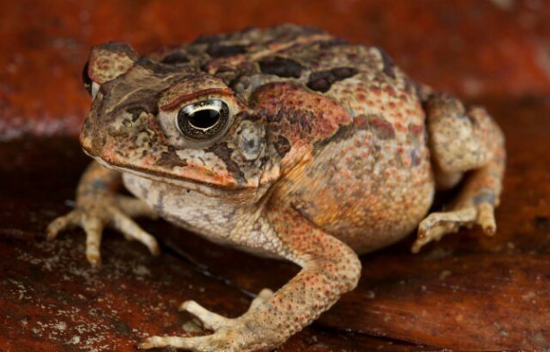
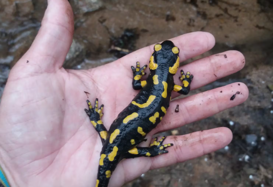
La salamandra es un anfibio de cuerpo alargado y cola, con cuatro patas cortas. Prefiere los lugares húmedos y sombríos, ya que su piel necesita mantenerse hidratada.
Los reptiles son vertebrados de piel cubierta de escamas; la mayoría regula su temperatura con el ambiente.
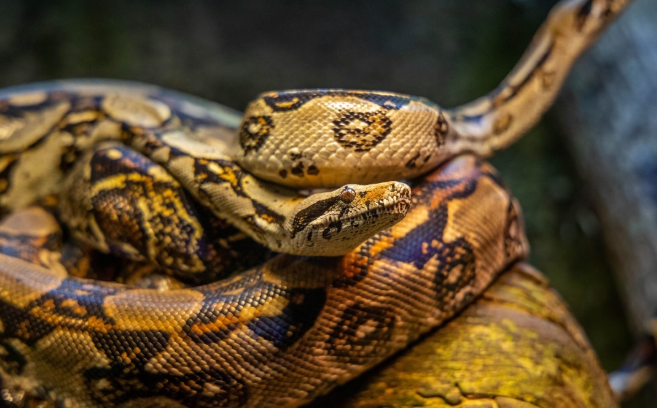
La serpiente es un reptil alargado que se desplaza reptando y no tiene patas. Muchas especies mudan su piel al crecer y utilizan la lengua para captar partículas del entorno.
La tortuga es un reptil que posee un caparazón protector unido a su esqueleto. Hay tortugas terrestres y acuáticas; sus patas y su forma varían según el ambiente en el que viven.
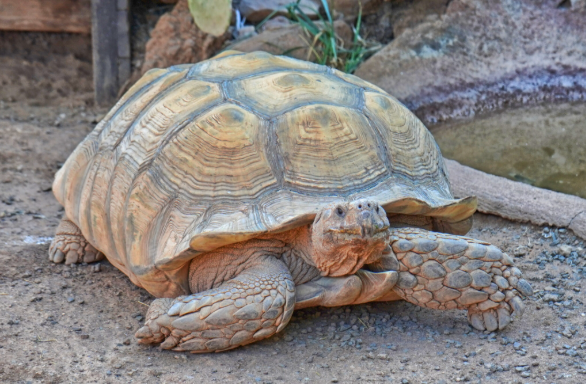
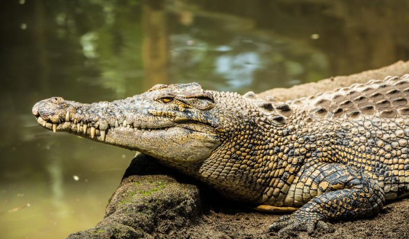
El cocodrilo es un reptil semiacuático de gran tamaño que habita en ríos, lagos y zonas pantanosas. Sus ojos y fosas nasales sobresalen del agua cuando permanece sumergido, al acecho de sus presas.